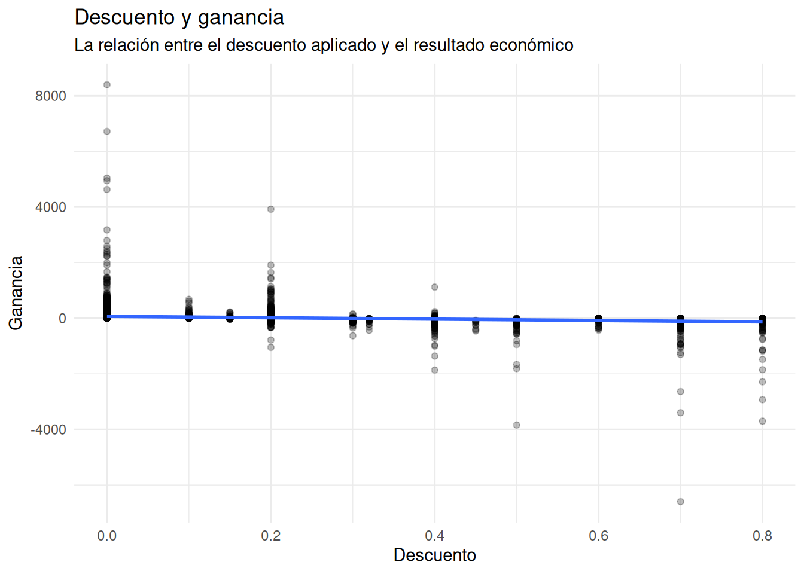
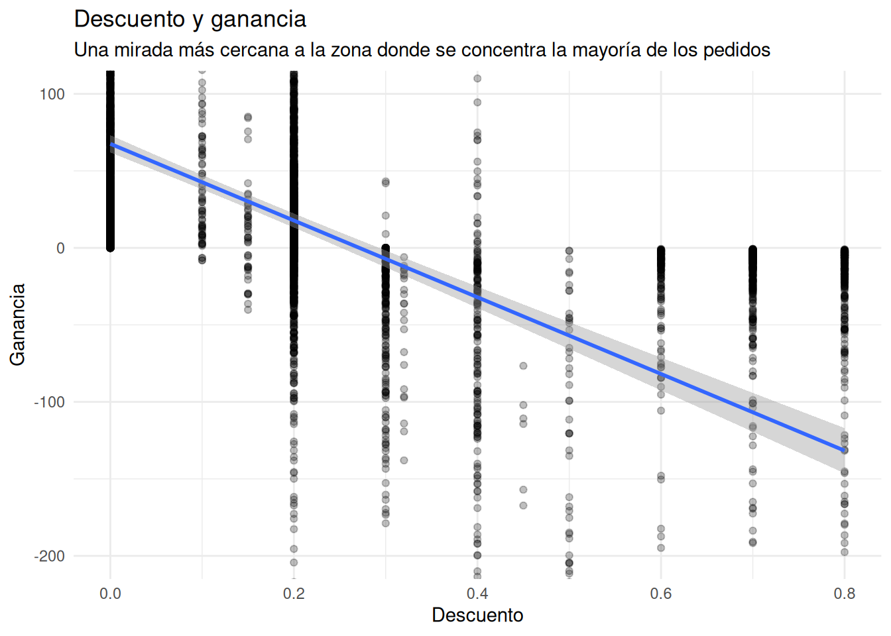
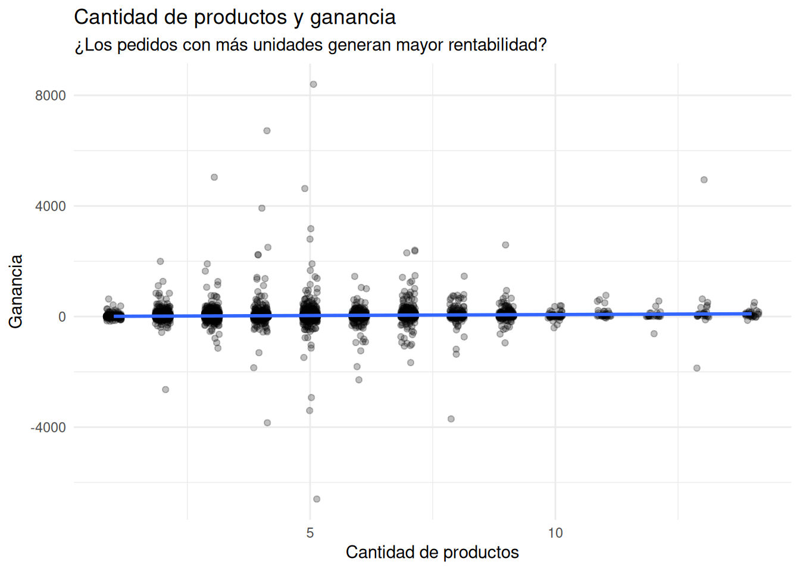
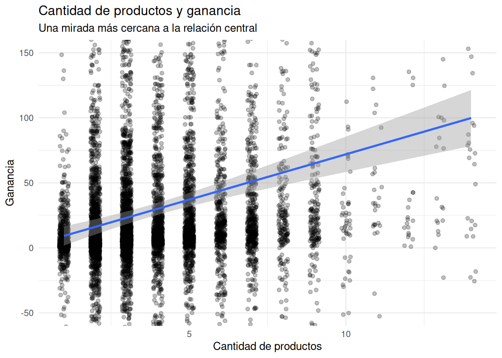
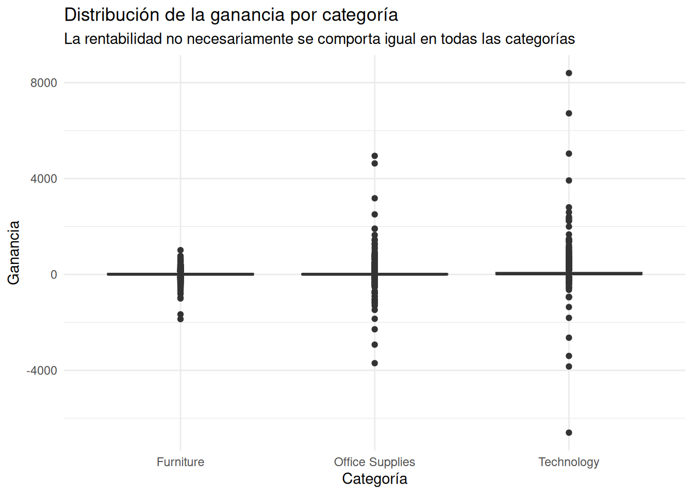
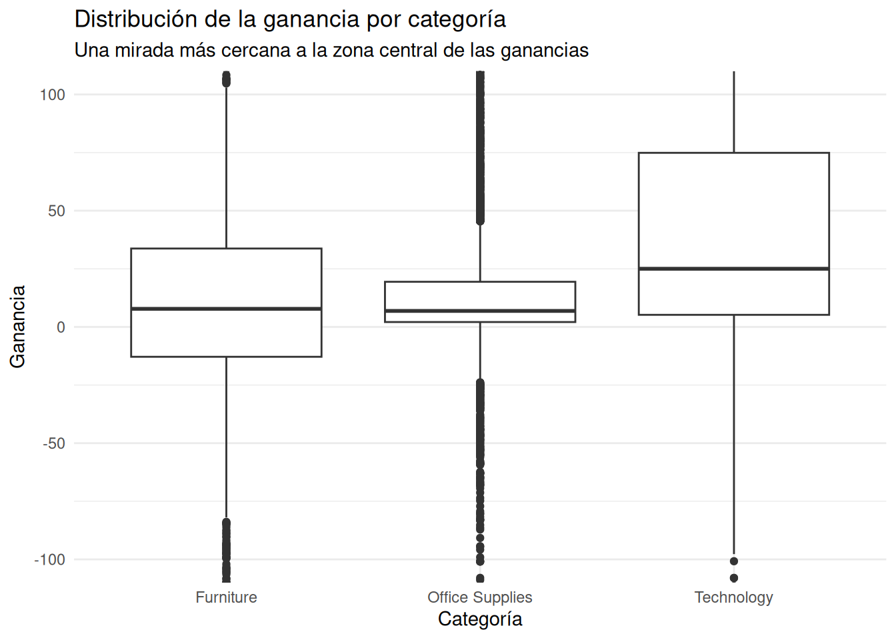
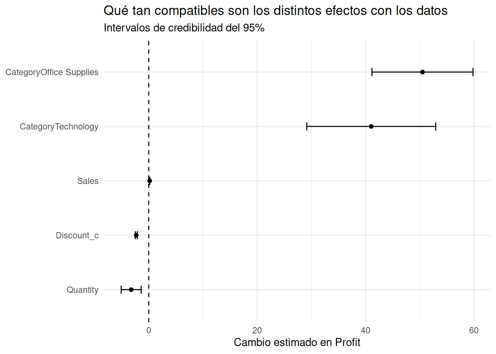
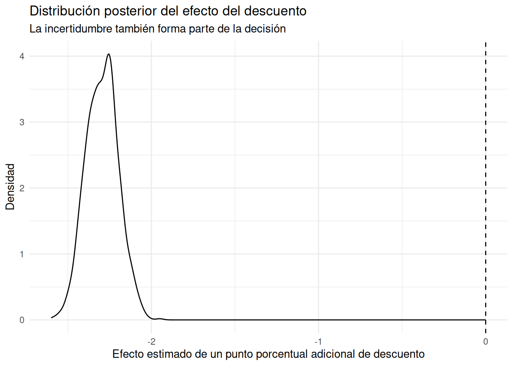
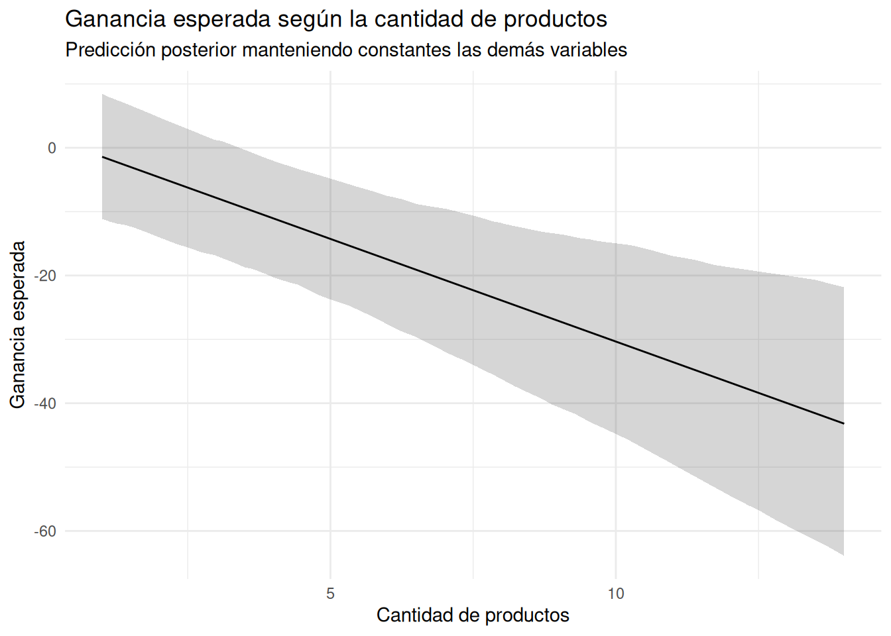

Rows: 9,994
Columns: 5
$ Profit <dbl> 41.9136, 219.5820, 6.8714, -383.0310, 2.5164, 14.1694, 1.9656…
$ Sales <dbl> 261.9600, 731.9400, 14.6200, 957.5775, 22.3680, 48.8600, 7.28…
$ Discount <dbl> 0.00, 0.00, 0.00, 0.45, 0.20, 0.00, 0.00, 0.20, 0.20, 0.00, 0…
$ Quantity <dbl> 2, 3, 2, 5, 2, 7, 4, 6, 3, 5, 9, 4, 3, 3, 5, 3, 6, 2, 2, 3, 4…
$ Category <chr> "Furniture", "Furniture", "Office Supplies", "Furniture", "Of…¿Qué factores parecen explicar la rentabilidad de Superstore?
Retail
Comunicación
Visualización
Un modelo bayesiano con R y rstanarm para identificar qué factores parecen asociarse con la rentabilidad de los pedidos.
En las entradas anteriores de esta colección hemos utilizado los datos de Superstore Sales para descubrir qué está ocurriendo dentro del negocio.
Hemos observado la evolución de las ventas, la distribución de las ganancias, el comportamiento de los descuentos y las diferencias entre categorías.
Pero conocer qué está ocurriendo es solamente el primer paso.
Ahora queremos avanzar hacia una pregunta algo más ambiciosa:
¿Qué factores parecen explicar las diferencias que observamos en la rentabilidad de los pedidos?
La palabra importante aquí es “parecen”.
No estamos intentando demostrar que una variable sea la causa de otra. Estamos buscando evidencia compatible con determinadas relaciones y, sobre todo, intentando cuantificar la incertidumbre que existe alrededor de ellas.
Para hacerlo utilizaremos un modelo de regresión lineal bayesiana construido con rstanarm.
El objetivo no será aprender una nueva función de R.
El objetivo será aprender a transformar varias observaciones del negocio en una explicación coherente que pueda ayudarnos a tomar mejores decisiones.
La pregunta de negocio
Imaginemos que somos analistas de una empresa de comercio electrónico.
Tenemos miles de pedidos y observamos que algunos generan buenas ganancias mientras otros producen pérdidas.
Además, sabemos que los pedidos pueden diferir en varios aspectos:
- el importe de la venta;
- el descuento aplicado;
- la cantidad de productos;
- la categoría de productos.
La pregunta entonces es:
¿Qué relación parece existir entre estas características y la ganancia obtenida por cada pedido?
Esta pregunta es diferente de preguntar simplemente cuánto se vende.
Un pedido puede tener ventas elevadas y, sin embargo, producir poca ganancia o incluso una pérdida.
Por eso necesitamos analizar conjuntamente varias características del pedido.
Comprendiendo los datos
Trabajaremos con 9.994 pedidos de Superstore Sales.
Para este análisis nos interesan cinco variables:
Profit: ganancia del pedido.Sales: valor de las ventas.Discount: descuento aplicado.Quantity: cantidad de productos del pedido.Category: categoría de productos.
Nuestro resultado de interés será Profit.
Las demás variables serán utilizadas para intentar comprender por qué la ganancia cambia de un pedido a otro.
El conjunto de datos contiene 9.994 pedidos, lo que nos proporciona una cantidad considerable de información para buscar patrones.
Pero antes de construir un modelo debemos mirar los datos.
Una regresión puede resumir una relación numéricamente, pero no sustituye al análisis exploratorio.
Explorando las relaciones
Ventas y ganancia
Una primera pregunta razonable es:
¿Los pedidos con mayores ventas tienden a producir mayores ganancias?

La nube de puntos muestra una enorme concentración de pedidos con ventas y ganancias relativamente pequeñas.
También aparecen algunos pedidos extremos. Existen pérdidas superiores a 2.000 dólares y ganancias superiores a 6.000 dólares, aunque estos casos son poco frecuentes.
Las ventas se concentran principalmente por debajo de los 3.000 dólares, aunque también existen algunos pedidos superiores a los 5.000 dólares.
A pesar de esta dispersión, aparece una tendencia general positiva: los pedidos con mayores ventas tienden a asociarse con mayores ganancias.
Sin embargo, la dispersión también nos está diciendo algo importante.
Las ventas por sí solas no parecen explicar completamente la rentabilidad.
Hay pedidos con niveles similares de ventas que terminan con resultados económicos muy diferentes.
Esto sugiere que debemos incorporar otras características del pedido.
Descuento y ganancia
Una segunda pregunta resulta especialmente interesante para cualquier negocio minorista:
¿Qué relación parece existir entre el descuento y la ganancia?

Aquí aparece un patrón diferente.
Los pedidos sin descuento concentran buena parte de las ganancias positivas.
A medida que aumenta el descuento, las ganancias parecen reducirse y, en los niveles más altos, las pérdidas se vuelven mucho más frecuentes.
La línea de tendencia ayuda a resumir esta relación, pero la enorme dispersión de los datos dificulta observar con precisión qué ocurre alrededor de la zona donde se concentran la mayoría de los pedidos.
Por eso hacemos un acercamiento.

Con este acercamiento, la relación negativa resulta mucho más evidente.
Cuando el descuento es cero, la ganancia típica se encuentra alrededor de los 60 dólares.
A medida que aumenta el descuento, la ganancia disminuye.
Alrededor del 30% de descuento, la ganancia se aproxima a cero y, con descuentos todavía mayores, las pérdidas se vuelven cada vez más visibles.
En torno al 80% de descuento, la pérdida típica observada en esta zona del gráfico se aproxima a los 130 dólares.
Esto no significa que todo pedido con un descuento elevado produzca pérdidas.
La nube de puntos deja claro que existe bastante variabilidad.
Pero sí aparece una señal empresarial importante:
los descuentos elevados parecen estar asociados con una menor rentabilidad.
Cantidad de productos y ganancia
La siguiente pregunta es diferente:
¿Los pedidos con más unidades generan mayor rentabilidad?
Como Quantity solamente puede tomar determinados valores enteros, muchos pedidos se superponen exactamente en la misma posición.
Para hacer visible mejor esa concentración utilizamos geom_jitter().

La distribución de los puntos es bastante dispersa.
Se observa que los pedidos con pocas unidades pueden producir tanto ganancias como pérdidas, mientras que la dispersión aumenta en determinados niveles intermedios de cantidad.
A partir de cantidades más elevadas aparecen nuevamente muchos pedidos alrededor de niveles relativamente moderados de ganancia.
La línea de tendencia parece relativamente recta, por lo que hacemos un acercamiento para observar mejor la relación central.

Al observar la zona central, la tendencia parece positiva.
Los pedidos con una unidad presentan una ganancia esperada cercana a los 12 dólares, mientras que la ganancia central aumenta progresivamente hasta aproximarse a los 100 dólares en los pedidos con cantidades superiores a 12 unidades.
Pero debemos ser cuidadosos.
El gráfico no nos permite afirmar que vender más unidades cause una mayor ganancia.
La cantidad de productos puede estar relacionada con muchas otras características del pedido.
Por ahora solamente podemos decir que existe una asociación positiva en la tendencia central observada en los datos.
La ganancia también depende de la categoría
Finalmente queremos saber si las distintas categorías presentan comportamientos diferentes.

El gráfico completo revela una gran cantidad de valores extremos.
Technology presenta algunos de los valores más extremos tanto de ganancias como de pérdidas.
Office Supplies también presenta una dispersión considerable.
Furniture parece presentar valores extremos menos pronunciados.
Sin embargo, estos valores extremos hacen difícil comparar las zonas centrales de las distribuciones.
Por eso hacemos nuevamente un acercamiento.

Aquí aparecen diferencias más claras.
Technology presenta una mediana cercana a 25 dólares y una caja que aproximadamente va desde 5 hasta 75 dólares.
Office Supplies presenta una mediana cercana a 5 dólares, con una caja aproximadamente entre 2 y 20 dólares.
Furniture presenta una mediana cercana a 6 dólares y una caja que se extiende aproximadamente desde 12 dólares de pérdida hasta 30 dólares de ganancia.
Esto nos proporciona una pista interesante.
Las categorías no parecen comportarse exactamente igual.
De las observaciones al modelo
Hasta ahora hemos observado varias relaciones:
- mayores ventas parecen asociarse con mayores ganancias;
- mayores descuentos parecen asociarse con menores ganancias;
- la cantidad de productos muestra una relación más compleja, aunque la tendencia central parece positiva;
- las categorías presentan diferencias en su distribución de ganancias.
El problema es que hemos analizado cada relación por separado.
Pero en un pedido real todas estas características ocurren simultáneamente.
Un pedido puede tener:
- muchas ventas;
- un descuento elevado;
- varias unidades;
- pertenecer a Technology.
Otro puede tener exactamente las mismas ventas, pero ningún descuento y pertenecer a Furniture.
¿Cómo podemos comparar estos pedidos teniendo en cuenta simultáneamente sus diferentes características?
Aquí aparece la utilidad de un modelo.
No queremos que el modelo nos diga simplemente si una variable “sube” o “baja”.
Queremos cuantificar cuánto parece cambiar la ganancia asociada con cada factor mientras mantenemos constantes los demás.
Construyendo el modelo bayesiano
Antes de ajustar el modelo transformaremos el descuento en porcentaje.
Esto no cambia la información contenida en los datos.
Simplemente transforma, por ejemplo, un descuento de 0.20 en 20.
La ventaja es interpretativa.
Ahora el coeficiente del modelo asociado con Discount_c podrá leerse directamente como el cambio estimado en la ganancia asociado con un punto porcentual adicional de descuento.
Nuestro modelo será:
Estamos utilizando una regresión lineal bayesiana.
La variable que queremos explicar es Profit.
Las variables que utilizamos para hacerlo son:
Discount_c;Sales;Quantity;Category.
La elección de una familia gaussiana significa que estamos modelando la ganancia como una variable continua alrededor de un valor esperado.
Pero la parte verdaderamente interesante no es la fórmula.
Es la interpretación.
Cada coeficiente representa el cambio esperado en Profit asociado con una variable manteniendo constantes las demás variables incluidas en el modelo.
Esto nos permite pasar de observar relaciones aisladas a construir una explicación conjunta.
¿Qué nos dice el modelo?
El modelo produjo las siguientes estimaciones centrales:
| Variable | Estimación central |
|---|---|
| Descuento | −2.3 |
| Ventas | 0.2 |
| Cantidad | −3.2 |
| Office Supplies | 50.4 |
| Technology | 41.5 |
La primera sorpresa aparece con Quantity.
En el análisis exploratorio habíamos observado una tendencia visual positiva, pero después de considerar simultáneamente descuento, ventas y categoría, el modelo estima un efecto negativo de aproximadamente 3,2 dólares por unidad adicional.
Esto no es una contradicción.
Son dos preguntas diferentes.
El gráfico mostraba la relación observada directamente entre cantidad y ganancia.
El modelo responde una pregunta más específica:
¿Qué ocurre con la ganancia esperada cuando aumenta la cantidad, si mantenemos constantes las ventas, el descuento y la categoría?
Bajo esa comparación condicional, la evidencia del modelo apunta hacia una relación negativa.
Esto es precisamente una de las razones para utilizar modelos multivariables: una relación observada directamente en los datos puede cambiar cuando tenemos en cuenta simultáneamente otras variables.
El descuento
El coeficiente estimado para Discount_c es aproximadamente −2,3.
Esto significa que, manteniendo constantes las ventas, la cantidad y la categoría, un aumento de un punto porcentual en el descuento está asociado con una disminución esperada de aproximadamente 2,3 dólares en la ganancia.
Por ejemplo, pasar de un descuento del 10% al 11% representa, según este modelo, una reducción esperada de aproximadamente 2,3 dólares en Profit, bajo las demás condiciones constantes.
No debemos interpretar esto como una ley universal del negocio.
Es una estimación obtenida a partir de estos datos y bajo la estructura de este modelo.
Las ventas
El coeficiente de Sales es aproximadamente 0,2.
Por cada dólar adicional de ventas, manteniendo constantes el descuento, la cantidad y la categoría, la ganancia esperada aumenta aproximadamente 0,20 dólares.
Dicho de otra manera, dentro de las condiciones representadas por el modelo, cada 100 dólares adicionales de ventas están asociados con aproximadamente 20 dólares adicionales de ganancia esperada.
Este resultado debe interpretarse con cuidado.
No significa que el margen de beneficio sea necesariamente del 20% en todos los pedidos.
El coeficiente representa una relación condicional estimada por el modelo, no un margen contable universal.
La cantidad
El coeficiente de Quantity es aproximadamente −3,2.
Por cada unidad adicional, manteniendo constantes el descuento, las ventas y la categoría, la ganancia esperada disminuye aproximadamente 3,2 dólares.
Este resultado merece especial atención porque parece contrario a lo que sugería el gráfico exploratorio.
Y precisamente aquí encontramos una de las ideas más útiles de esta entrada:
Una relación observada en bruto no necesariamente es la misma relación que aparece cuando controlamos simultáneamente por otras variables.
El gráfico mostraba que los pedidos con mayor cantidad podían presentar mayores ganancias.
Pero esos pedidos también pueden tener mayores ventas.
Cuando el modelo compara pedidos manteniendo las ventas constantes, la asociación estimada de Quantity cambia de signo.
No significa que el gráfico estuviera equivocado.
Significa que estábamos haciendo preguntas diferentes.
Las categorías
En el modelo, Furniture es la categoría de referencia.
Por eso los coeficientes de las otras categorías representan diferencias respecto a Furniture.
Para Office Supplies, el modelo estima aproximadamente 50,4 dólares adicionales de ganancia, manteniendo constantes descuento, ventas y cantidad.
Para Technology, la estimación es aproximadamente 41,5 dólares adicionales respecto a Furniture bajo las mismas condiciones.
Esto significa que, para pedidos comparables en las variables incluidas en el modelo, las categorías Office Supplies y Technology presentan una ganancia esperada superior a Furniture.
Nuevamente, estamos hablando de una asociación condicional.
El modelo no nos permite afirmar que cambiar un producto de Furniture a Technology vaya a causar automáticamente una ganancia adicional de 41,5 dólares.
Lo que encontramos es que, dentro de los datos analizados, existen diferencias sistemáticas entre las categorías después de tener en cuenta las otras variables del modelo.
Una parte de la historia todavía queda sin explicar
El modelo estima un valor de sigma cercano a 198,8 dólares.
Esta cifra es importante porque nos recuerda algo que fácilmente podríamos olvidar después de observar varios coeficientes:
el modelo no explica toda la variabilidad de las ganancias.
Incluso después de tener en cuenta descuento, ventas, cantidad y categoría, todavía existe una dispersión considerable en Profit.
En otras palabras, dos pedidos con características similares según nuestras variables pueden terminar produciendo ganancias bastante diferentes.
Esto puede deberse a muchos factores que no están incluidos en nuestro modelo.
Por ejemplo:
- productos concretos;
- costos asociados a los productos;
- región;
- segmento de cliente;
- subcategoría;
- costos de envío;
- características específicas del pedido;
- otros factores que simplemente no están disponibles en las variables que hemos seleccionado.
Por eso no debemos leer el modelo como una explicación completa del negocio.
Es una primera explicación cuantitativa.
Y, como toda explicación basada en datos, tiene límites.
Primera conclusión
Después de pasar de la exploración visual a un modelo bayesiano, nuestra historia comienza a ser más precisa.
La evidencia sugiere que:
- los descuentos están asociados con menores ganancias;
- las ventas están asociadas con mayores ganancias;
- la cantidad presenta una asociación negativa cuando se mantienen constantes las demás variables del modelo;
- Office Supplies y Technology presentan ganancias esperadas superiores a Furniture bajo condiciones comparables;
- y todavía permanece una gran cantidad de variabilidad que nuestras variables no consiguen explicar.
Pero todavía nos falta una parte fundamental.
Una estimación central como −2,3 dólares por punto porcentual de descuento no nos dice cuánto podría variar realmente ese efecto.
Y aquí es donde el enfoque bayesiano se vuelve especialmente útil.
En lugar de quedarnos solamente con un número, podemos observar toda la incertidumbre que rodea a nuestras estimaciones.
En la siguiente parte veremos precisamente eso.
¿Cuánta incertidumbre existe alrededor de nuestras estimaciones?
Hasta ahora hemos hablado de valores centrales.
Por ejemplo, el modelo estima que un punto porcentual adicional de descuento está asociado con una disminución de aproximadamente 2,3 dólares en la ganancia.
Pero sería peligroso interpretar ese 2,3 como si fuera un número exacto.
Los datos contienen variabilidad y nuestro modelo también tiene incertidumbre.
En lugar de preguntar únicamente:
¿Cuál es el efecto estimado?
podemos hacer una pregunta más útil:
¿Qué valores del efecto son compatibles con los datos y con nuestro modelo?
Para responderla utilizaremos intervalos de credibilidad del 95%.
Los intervalos de credibilidad
El modelo nos permite obtener un intervalo de credibilidad para cada parámetro.
Para facilitar la lectura, podemos presentar únicamente las estimaciones y sus intervalos.
Los resultados son:
| Variable | Intervalo de credibilidad 95% |
|---|---|
| Descuento | −2,48 a −2,11 |
| Ventas | 0,178 a 0,192 |
| Cantidad | −5,08 a −1,39 |
| Office Supplies | 41,18 a 59,84 |
| Technology | 29,16 a 52,96 |
Estos intervalos nos proporcionan mucha más información que los coeficientes centrales por sí solos.
Una mirada conjunta a los efectos
Podemos visualizar todos los intervalos simultáneamente.

La línea vertical situada en cero es especialmente importante.
Representa la situación en la que no habría cambio asociado con la variable.
Podemos utilizarla como referencia visual para interpretar los intervalos.
En nuestro análisis, ninguno de los intervalos de las cinco variables cruza el cero.
Esto significa que los valores compatibles con nuestro modelo se encuentran claramente por encima o por debajo de cero.
El descuento
Para Discount_c, el intervalo va aproximadamente desde −2,48 hasta −2,11 dólares.
La interpretación empresarial es clara:
manteniendo constantes las demás variables del modelo, los valores compatibles con nuestro análisis apuntan hacia una disminución de la ganancia cuando aumenta el descuento.
Incluso el extremo menos negativo del intervalo continúa siendo negativo.
Por tanto, la incertidumbre alrededor de la magnitud exacta del efecto es relativamente pequeña.
No sabemos que el efecto sea exactamente −2,3 dólares.
Pero nuestros resultados son compatibles con un efecto situado aproximadamente entre −2,48 y −2,11 dólares por cada punto porcentual adicional de descuento.
Esta diferencia es fundamental.
Bayes no elimina la incertidumbre; nos permite cuantificarla.
Las ventas
El intervalo de Sales se encuentra aproximadamente entre 0,178 y 0,192 dólares por cada dólar adicional de ventas.
El intervalo es muy estrecho.
Esto indica que la estimación del efecto de las ventas es bastante precisa dentro del modelo.
La dirección también es consistente: todo el intervalo está por encima de cero.
Por tanto, nuestros resultados son compatibles con una asociación positiva entre ventas y ganancia, manteniendo constantes las demás variables incluidas.
En términos prácticos, 100 dólares adicionales de ventas están asociados con aproximadamente 17,8 a 19,2 dólares adicionales de ganancia esperada, bajo las condiciones representadas por el modelo.
La cantidad
Para Quantity, el intervalo va aproximadamente desde −5,08 hasta −1,39 dólares por unidad adicional.
Aquí encontramos nuevamente un resultado interesante.
Todo el intervalo se encuentra por debajo de cero.
Por lo tanto, después de controlar por ventas, descuento y categoría, los resultados son compatibles con una asociación negativa entre cantidad y ganancia.
La magnitud exacta todavía presenta incertidumbre.
Podría encontrarse cerca de una reducción de 1,4 dólares por unidad o acercarse a una reducción de 5,1 dólares.
Pero el signo del efecto es mucho más estable que su magnitud exacta.
Esta es una distinción muy útil para la toma de decisiones:
podemos tener mayor certeza sobre la dirección de una relación que sobre su magnitud exacta.
¿Qué ocurre con las categorías?
Las diferencias entre categorías también presentan intervalos relativamente claros.
Para Office Supplies, el intervalo se encuentra aproximadamente entre 41,2 y 59,8 dólares adicionales respecto a Furniture.
Para Technology, se encuentra aproximadamente entre 29,2 y 53,0 dólares adicionales respecto a Furniture.
En ambos casos el intervalo está completamente por encima de cero.
Por tanto, bajo las condiciones representadas por el modelo, los datos son compatibles con una ganancia esperada mayor para estas dos categorías que para Furniture.
Sin embargo, debemos recordar qué significa “respecto a Furniture”.
Furniture es nuestra categoría de referencia.
Por eso no estamos diciendo que Technology tenga una ganancia de 41 dólares.
Estamos diciendo que, comparando pedidos con el mismo nivel de ventas, descuento y cantidad, el modelo estima una diferencia positiva respecto a Furniture.
La diferencia es importante porque evita interpretar los coeficientes categóricos como valores absolutos.
La incertidumbre también puede verse como una distribución
Los intervalos son útiles, pero todavía podemos ir un paso más allá.
En un análisis bayesiano no obtenemos únicamente una estimación central.
Obtenemos una distribución posterior de valores plausibles para cada parámetro.
Podemos observar la distribución correspondiente al efecto del descuento.

Este gráfico puede parecer, a primera vista, simplemente otra curva.
Pero conceptualmente representa algo muy importante.
Cada punto de esta distribución corresponde a un posible valor del efecto del descuento que aparece en las simulaciones posteriores del modelo.
La mayor concentración se encuentra alrededor de −2,3 dólares.
Las partes más alejadas de la distribución representan valores menos plausibles dentro de nuestro análisis.
La distribución se extiende aproximadamente desde valores cercanos a −2,5 hasta valores cercanos a −2,1, coherentemente con el intervalo de credibilidad que acabamos de observar.
Y hay algo especialmente llamativo:
toda la distribución se encuentra muy alejada de cero.
Esto refuerza visualmente nuestra conclusión anterior.
No necesitamos imaginar un único valor exacto para el efecto.
Podemos pensar en una distribución de posibilidades, concentrada alrededor de un efecto negativo.
¿Por qué es útil pensar en distribuciones?
Imaginemos dos situaciones.
En la primera, un modelo produce una estimación de −2,3 dólares, pero existe una enorme incertidumbre y los valores plausibles se extienden desde −10 hasta +6.
En la segunda, la estimación también es −2,3, pero prácticamente todos los valores plausibles están entre −2,5 y −2,1.
El número central sería el mismo.
La decisión empresarial podría ser muy diferente.
Por eso un análisis bayesiano no debería terminar simplemente con:
“El coeficiente es −2,3.”
La pregunta relevante es:
“¿Qué tan incierto es ese −2,3?”
En nuestro caso, la respuesta parece ser: relativamente poco incierto dentro del modelo.
Esto no significa que conozcamos perfectamente el efecto causal de los descuentos.
Significa que, dada la información disponible y la estructura del modelo, existe una concentración bastante estrecha de valores plausibles para la asociación estimada.
Una última pregunta: ¿qué ganancia esperamos según la cantidad?
Hasta ahora hemos hablado de los coeficientes.
Pero los coeficientes pueden resultar abstractos para alguien que tiene que tomar decisiones.
Podemos utilizar el modelo para construir escenarios.
Por ejemplo, podemos preguntar:
¿Cómo cambia la ganancia esperada cuando modificamos la cantidad de productos de un pedido, manteniendo constantes las demás condiciones?
Para hacerlo construiremos 100 escenarios diferentes de cantidad.
Mantendremos:
- el descuento en su mediana;
- las ventas en su mediana;
- la categoría en Technology.
Lo único que cambia será Quantity.
Ahora podemos utilizar el modelo para obtener las predicciones posteriores correspondientes a cada uno de estos escenarios.
Para cada una de las 100 cantidades obtenemos múltiples valores posibles de ganancia esperada.
Resumimos esas predicciones calculando la media y los límites del intervalo de credibilidad.
Finalmente podemos visualizar cómo cambia la ganancia esperada.

Aquí aparece una diferencia importante respecto al gráfico exploratorio que vimos al principio.
El gráfico exploratorio mostraba la relación observada directamente entre cantidad y ganancia.
Ahora estamos haciendo algo diferente.
Estamos preguntando qué ocurre con la ganancia esperada cuando modificamos la cantidad mientras mantenemos constantes el descuento, las ventas y la categoría.
Bajo estas condiciones, la línea central presenta una tendencia negativa.
¿Cómo debemos interpretar esta predicción?
La línea central comienza alrededor de 1 dólar de pérdida esperada para cantidades cercanas a una unidad y desciende progresivamente hasta aproximadamente 42 dólares de pérdida esperada cuando la cantidad se acerca a 14 unidades.
A primera vista puede resultar extraño.
¿Por qué un pedido con más productos tendría una menor ganancia esperada?
La clave está en recordar qué estamos manteniendo constante.
Estamos suponiendo que las ventas permanecen en su valor mediano.
Por lo tanto, estamos comparando escenarios en los que aumenta la cantidad de productos sin aumentar simultáneamente el importe de las ventas.
Esto no equivale a decir:
“Vender más productos provoca pérdidas.”
La interpretación correcta es mucho más específica:
Para pedidos con el mismo nivel de ventas, el mismo descuento y la misma categoría, el modelo estima una menor ganancia esperada a medida que aumenta la cantidad de unidades.
Este resultado puede ser compatible con una situación empresarial en la que vender más unidades dentro de un mismo importe total implique un menor valor económico por unidad o una estructura de costos menos favorable.
Pero nuestro modelo no contiene información suficiente para determinar cuál de esas explicaciones es la correcta.
Por eso debemos separar cuidadosamente:
lo que el modelo encuentra
de
la explicación empresarial que todavía tendríamos que investigar.
La banda de incertidumbre es tan importante como la línea
La zona sombreada alrededor de la línea representa la incertidumbre de las predicciones.
Y aquí encontramos una característica muy importante.
La banda es relativamente amplia.
Para cantidades cercanas a una unidad, el intervalo de predicción se extiende aproximadamente desde 8 dólares de ganancia hasta 11 dólares de pérdida.
A medida que aumenta la cantidad, la incertidumbre se hace mayor.
Alrededor de seis unidades comienza a observarse una ampliación más evidente de la banda.
Y cerca de 14 unidades, los valores compatibles con la predicción llegan aproximadamente desde 20 dólares de pérdida hasta 60 dólares de pérdida.
Esto cambia la manera en que debemos leer la gráfica.
La línea central nos muestra el escenario esperado según el modelo.
Pero la banda nos recuerda que existen muchos resultados posibles alrededor de ese escenario.
Por eso sería incorrecto decir:
“Con 14 productos tendremos una pérdida de 42 dólares.”
La interpretación adecuada sería:
“Bajo las condiciones utilizadas en este escenario, la ganancia esperada se encuentra alrededor de 42 dólares de pérdida, pero existe una incertidumbre considerable alrededor de esa estimación.”
Esta diferencia entre predicción central e incertidumbre predictiva es fundamental para tomar decisiones bajo incertidumbre.
¿Qué hemos aprendido hasta aquí?
Después de integrar la exploración, el modelo y sus distribuciones posteriores, nuestra explicación comienza a ser más coherente.
La evidencia disponible sugiere que:
Los descuentos presentan una asociación negativa bastante consistente con la ganancia.
Las ventas presentan una asociación positiva y relativamente precisa.
La cantidad, una vez que controlamos por ventas, descuento y categoría, presenta una asociación negativa.
Las categorías muestran diferencias importantes respecto a Furniture, especialmente Office Supplies y Technology.
Y, al mismo tiempo, la incertidumbre predictiva nos recuerda que conocer estos factores no permite predecir perfectamente la ganancia de cada pedido.
Esto es precisamente lo que queremos conseguir con un análisis bayesiano.
No una falsa certeza.
Sino una representación más completa de lo que sabemos, de lo que todavía desconocemos y de los escenarios que parecen plausibles.
La siguiente pregunta es entonces inevitable:
¿Qué debería hacer un analista con toda esta información?
¿Qué haría un analista con esta información?
Llegados a este punto tenemos algo más valioso que una colección de coeficientes.
Tenemos una explicación cuantitativa, aunque todavía imperfecta, de algunos de los factores asociados con la ganancia de los pedidos.
La pregunta ahora cambia.
Ya no estamos preguntando:
¿Qué encontró el modelo?
Estamos preguntando:
¿Qué podemos hacer con lo que aprendimos?
Y aquí es donde el análisis adquiere verdadero valor para el negocio.
Primera recomendación: tratar el descuento como una variable económica, no solamente comercial
El resultado más consistente del análisis aparece alrededor del descuento.
El modelo estima una reducción de aproximadamente 2,3 dólares de ganancia por cada punto porcentual adicional de descuento, manteniendo constantes las ventas, la cantidad y la categoría.
El intervalo de credibilidad del 95% se encuentra aproximadamente entre −2,48 y −2,11 dólares.
Esto sugiere que incrementar descuentos puede tener un costo económico importante.
Por supuesto, esto no significa que debamos eliminar los descuentos.
Un descuento puede tener otros objetivos:
- aumentar las ventas;
- atraer nuevos clientes;
- reducir inventario;
- estimular determinadas categorías;
- aumentar la frecuencia de compra.
El problema aparece cuando evaluamos el descuento únicamente desde el punto de vista de las ventas.
Una venta adicional no necesariamente representa una mejora del resultado económico.
Por eso una recomendación razonable sería:
evaluar las campañas de descuento utilizando simultáneamente ventas y ganancia.
En otras palabras:
No deberíamos preguntar solamente cuánto vendimos después del descuento, sino cuánto valor económico generó realmente ese descuento.
Segunda recomendación: no interpretar las ventas de manera aislada
Encontramos una asociación positiva entre ventas y ganancia.
El coeficiente central es aproximadamente 0,185 dólares de ganancia por cada dólar adicional de ventas, con un intervalo de credibilidad de aproximadamente 0,178 a 0,192.
Esto equivale, dentro del modelo, a aproximadamente 18–19 dólares adicionales de ganancia por cada 100 dólares adicionales de ventas, manteniendo constantes las demás variables.
A primera vista parece una buena noticia.
Pero existe una lección importante.
Vender más no garantiza automáticamente una mejor rentabilidad.
El propio modelo nos muestra que las ventas, el descuento y la cantidad están relacionadas con la ganancia al mismo tiempo.
Por eso una estrategia comercial basada exclusivamente en aumentar el volumen de ventas puede ser incompleta.
La pregunta relevante para el negocio debería ser:
¿Cuánto valor adicional estamos generando por cada dólar adicional de ventas y cuánto estamos sacrificando mediante descuentos y otras condiciones comerciales?
Tercera recomendación: investigar qué ocurre con la cantidad de productos
La cantidad presenta un resultado particularmente interesante.
El modelo estima una asociación negativa de aproximadamente 3,2 dólares por unidad adicional, con un intervalo de credibilidad entre aproximadamente −5,1 y −1,4 dólares.
Pero debemos ser especialmente cuidadosos con este resultado.
El coeficiente no significa simplemente que:
“Vender más unidades es malo.”
Eso sería una interpretación incorrecta.
El modelo está comparando pedidos manteniendo constantes las ventas, el descuento y la categoría.
Por tanto, cuando aumenta la cantidad pero las ventas permanecen constantes, estamos hablando implícitamente de pedidos con un menor valor promedio por unidad.
Esto nos plantea una pregunta empresarial mucho más interesante:
¿Existe una relación entre el valor económico de cada unidad y la rentabilidad del pedido?
Nuestro análisis no responde todavía esa pregunta.
Pero sí nos proporciona una pista para investigarla.
Un siguiente análisis podría estudiar variables como:
- ventas por unidad;
- descuento por categoría;
- margen por producto;
- rentabilidad por segmento;
- productos concretos que generan pérdidas.
Esto es exactamente lo que debería hacer un buen análisis exploratorio: no necesariamente cerrar todas las preguntas, sino ayudarnos a encontrar las preguntas correctas para la siguiente etapa.
Cuarta recomendación: las categorías merecen estrategias diferentes
También encontramos diferencias relevantes entre categorías.
En comparación con Furniture, el modelo estima una diferencia positiva de aproximadamente:
- 50,4 dólares para Office Supplies;
- 41,5 dólares para Technology.
Los intervalos de credibilidad también permanecen por encima de cero:
- Office Supplies: aproximadamente 41,2 a 59,8 dólares;
- Technology: aproximadamente 29,2 a 53,0 dólares.
Esto sugiere que la rentabilidad no se comporta exactamente igual en las tres categorías.
Pero nuevamente debemos evitar una conclusión demasiado rápida.
No podemos afirmar que:
“Office Supplies siempre es más rentable que Furniture.”
Estamos hablando de diferencias condicionadas a las variables incluidas en el modelo.
Es decir, estamos comparando pedidos con niveles similares de ventas, descuento y cantidad.
La recomendación, por tanto, no sería simplemente abandonar Furniture.
Sería más razonable:
analizar las políticas comerciales de cada categoría de manera diferenciada.
Una política de descuentos que funciona razonablemente bien en una categoría podría tener consecuencias diferentes en otra.
Una matriz sencilla para pensar las decisiones
Podemos resumir nuestros hallazgos de una manera muy sencilla:
| Factor | Evidencia encontrada | Implicación empresarial |
|---|---|---|
| Descuento | Asociación negativa consistente con Profit | Evaluar cuidadosamente el costo de las promociones |
| Ventas | Asociación positiva y relativamente precisa | Buscar crecimiento rentable, no solamente mayor volumen |
| Cantidad | Asociación negativa condicionada a las demás variables | Investigar valor por unidad y estructura de costos |
| Office Supplies | Diferencia positiva respecto a Furniture | Considerar estrategias diferenciadas por categoría |
| Technology | Diferencia positiva respecto a Furniture | Analizar qué características explican su mejor desempeño |
Esta tabla no pretende convertir el modelo en una lista automática de decisiones.
Su objetivo es algo más modesto y más útil:
convertir evidencia estadística en preguntas y acciones empresariales concretas.
Pero hay algo que todavía no sabemos
Hasta ahora hemos utilizado expresiones como “asociación” y “diferencia”.
Esto es deliberado.
Nuestro análisis es observacional.
El modelo encuentra relaciones entre variables presentes en los datos, pero eso no significa que haya identificado relaciones causales.
Por ejemplo, observamos una asociación negativa entre descuento y ganancia.
Sería tentador concluir:
“Si eliminamos los descuentos, aumentaremos las ganancias.”
Pero eso no necesariamente se sigue de nuestros resultados.
Es posible que los descuentos se hayan aplicado precisamente a productos, clientes o situaciones que ya tenían características particulares.
También podrían existir variables importantes que no hemos incluido en el modelo.
Por ejemplo:
- región;
- segmento de cliente;
- producto;
- costos específicos;
- temporada;
- canal de venta;
- características del cliente.
Por tanto, nuestro resultado debe interpretarse como evidencia sobre asociaciones presentes en estos datos, no como una prueba de causalidad.
Esta distinción es fundamental para cualquier analista que pretenda convertir un modelo en una decisión empresarial.
La incertidumbre que permanece
También debemos recordar algo que puede perderse fácilmente cuando observamos intervalos relativamente estrechos.
Un modelo puede estimar algunos efectos con bastante precisión y, al mismo tiempo, dejar una gran cantidad de variabilidad sin explicar.
Nuestro modelo tiene un parámetro residual sigma cercano a 199 dólares.
Esto significa que todavía existe una variabilidad considerable en la ganancia que no queda explicada por las variables incluidas.
Y esto es completamente normal.
La realidad empresarial es mucho más compleja que nuestro modelo.
Dos pedidos pueden tener:
- la misma cantidad;
- ventas similares;
- el mismo descuento;
- la misma categoría;
y aun así terminar con ganancias muy diferentes.
¿Por qué?
Porque existen muchas otras circunstancias que no estamos modelando.
Por eso no deberíamos utilizar este modelo como una máquina para predecir exactamente la ganancia de cada pedido.
Es mucho más apropiado utilizarlo como una herramienta para comprender patrones y evaluar escenarios.
¿Qué nos aporta entonces el enfoque bayesiano?
Al comenzar esta colección queríamos responder una pregunta sencilla:
¿Qué factores parecen explicar lo que estamos observando?
Después de varias etapas de análisis, ahora podemos responderla de una manera mucho más completa.
Los datos son compatibles con una relación negativa entre descuento y ganancia.
Las ventas presentan una asociación positiva con la ganancia.
La cantidad presenta una asociación negativa una vez que controlamos por ventas, descuento y categoría.
Las categorías Office Supplies y Technology presentan diferencias positivas respecto a Furniture bajo las condiciones del modelo.
Pero ninguna de estas afirmaciones necesita convertirse en una certeza absoluta.
El enfoque bayesiano nos obliga a mantener una idea importante presente:
Cada estimación viene acompañada de incertidumbre.
No tenemos simplemente un número.
Tenemos una distribución de valores plausibles.
No tenemos solamente una predicción.
Tenemos un escenario central acompañado por una banda de incertidumbre.
Y eso cambia la conversación empresarial.
En lugar de:
“El descuento reduce la ganancia exactamente en 2,3 dólares.”
podemos decir:
“Nuestros resultados son compatibles con una reducción de aproximadamente 2,1 a 2,5 dólares por cada punto porcentual adicional de descuento, manteniendo constantes las demás variables del modelo.”
La segunda afirmación es menos espectacular.
Pero es mucho más honesta.
De los datos a la decisión
Esta colección comenzó observando los datos.
Primero preguntamos qué estaba ocurriendo.
Después comenzamos a explorar relaciones entre las variables.
Finalmente construimos un modelo bayesiano para intentar separar algunos de esos efectos y representar la incertidumbre alrededor de nuestras estimaciones.
Ese recorrido es importante.
Un modelo no apareció mágicamente para producir una respuesta.
La respuesta surgió de una secuencia:
pregunta → datos → exploración → modelo → incertidumbre → decisión.
Ese es, en nuestra opinión, uno de los principios más importantes de Business Analytics.
La estadística no sustituye al razonamiento empresarial.
Lo ayuda.
Reflexión bayesiana
Después de recorrer toda esta colección podemos volver a la pregunta inicial:
¿Qué factores parecen explicar el desempeño del negocio?
La respuesta no es un único coeficiente.
Es un conjunto de evidencias.
Los descuentos parecen estar asociados con menores ganancias.
Las ventas parecen estar asociadas con mayores ganancias.
La cantidad presenta una relación negativa cuando mantenemos constantes las ventas y las demás variables del modelo.
Las categorías no parecen comportarse exactamente igual.
Y todavía existe una cantidad importante de variabilidad que nuestro modelo no explica.
Esto último quizá sea la lección más importante.
Comprender mejor un negocio no significa eliminar la incertidumbre.
Significa aprender a convivir con ella de una manera más inteligente.
Un buen modelo no nos dice exactamente qué ocurrirá.
Nos ayuda a distinguir:
- qué parece consistente con los datos;
- qué todavía es incierto;
- qué escenarios son plausibles;
- qué preguntas deberíamos investigar después.
Y precisamente ahí está el valor del pensamiento bayesiano.
Los modelos ayudan a pensar.
No eliminan la incertidumbre.
Apéndice — Código completo
A continuación se presenta el código completo utilizado durante el análisis, en el mismo orden en que fue ejecutado.
Los bloques se encuentran desactivados para que el apéndice no vuelva a ejecutar el análisis durante el renderizado. El lector puede copiar cada bloque y ejecutarlo en R para reproducir el análisis.
A. Preparación
options(scipen = 999)
library(tidyverse)
#library(rstanarm)
library(ggplot2)
library(posterior)
library(bayesplot)
superstore <- read_csv(
"superstore_sales.csv",
guess_max = 10000,
show_col_types = FALSE
)
superstore |>
select(
Profit,
Sales,
Discount,
Quantity,
Category
) |>
glimpse()B. Explorar ventas y ganancia
ggplot(
superstore,
aes(
x = Sales,
y = Profit
)
) +
geom_point(alpha = 0.25) +
geom_smooth(
method = "lm",
se = TRUE
) +
labs(
title = "Ventas y ganancia",
subtitle = "Una primera mirada a la relación entre ambas variables",
x = "Ventas",
y = "Ganancia"
) +
theme_minimal()C. Explorar descuento y ganancia
ggplot(
superstore,
aes(
x = Discount,
y = Profit
)
) +
geom_point(alpha = 0.25) +
geom_smooth(
method = "lm",
se = TRUE
) +
labs(
title = "Descuento y ganancia",
subtitle = "La relación entre el descuento aplicado y el resultado económico",
x = "Descuento",
y = "Ganancia"
) +
theme_minimal()D. Explorar descuento y ganancia con zoom
ggplot(
superstore,
aes(
x = Discount,
y = Profit
)
) +
geom_point(alpha = 0.25) +
geom_smooth(
method = "lm",
se = TRUE
) +
coord_cartesian(
ylim = c(-200, 100)
) +
labs(
title = "Descuento y ganancia",
subtitle = "La relación entre el descuento aplicado y el resultado económico",
x = "Descuento",
y = "Ganancia"
) +
theme_minimal()E. Explorar cantidad y ganancia
ggplot(
superstore,
aes(
x = Quantity,
y = Profit
)
) +
geom_jitter(
width = 0.15,
alpha = 0.25
) +
geom_smooth(
method = "lm",
se = TRUE
) +
labs(
title = "Cantidad de productos y ganancia",
subtitle = "¿Los pedidos con más unidades generan mayor rentabilidad?",
x = "Cantidad de productos",
y = "Ganancia"
) +
theme_minimal()F. Explorar cantidad y ganancia con zoom
ggplot(
superstore,
aes(
x = Quantity,
y = Profit
)
) +
geom_jitter(
width = 0.15,
alpha = 0.25
) +
geom_smooth(
method = "lm",
se = TRUE
) +
coord_cartesian(
ylim = c(-50, 150)
) +
labs(
title = "Cantidad de productos y ganancia",
subtitle = "¿Los pedidos con más unidades generan mayor rentabilidad?",
x = "Cantidad de productos",
y = "Ganancia"
) +
theme_minimal()G. Explorar la ganancia por categoría
ggplot(
superstore,
aes(
x = Category,
y = Profit
)
) +
geom_boxplot() +
labs(
title = "Distribución de la ganancia por categoría",
subtitle = "La rentabilidad no necesariamente se comporta igual en todas las categorías",
x = "Categoría",
y = "Ganancia"
) +
theme_minimal()H. Explorar la ganancia por categoría con zoom
ggplot(
superstore,
aes(
x = Category,
y = Profit
)
) +
geom_boxplot() +
coord_cartesian(
ylim = c(-100, 100)
) +
labs(
title = "Distribución de la ganancia por categoría",
subtitle = "La rentabilidad no necesariamente se comporta igual en todas las categorías",
x = "Categoría",
y = "Ganancia"
) +
theme_minimal()I. Crear el descuento en porcentaje
superstore <- superstore |>
mutate(
Discount_c = Discount * 100
)J. Ajustar el modelo bayesiano
modelo_profit <- stan_glm(
Profit ~ Discount_c + Sales + Quantity + Category,
data = superstore,
family = gaussian(),
chains = 2,
iter = 1000,
seed = 1234,
refresh = 0
)
modelo_profitK. Resumir los parámetros del modelo
resumen_modelo <- summary(
modelo_profit,
pars = c(
"Discount_c",
"Sales",
"Quantity",
"CategoryOffice Supplies",
"CategoryTechnology"
),
probs = c(
0.025,
0.5,
0.975
)
)
resumen_modelo <- as.data.frame(
resumen_modelo
) |>
tibble::rownames_to_column(
"Variable"
)
resumen_modeloL. Obtener los intervalos de credibilidad
intervalos <- posterior_interval(
modelo_profit,
pars = c(
"Discount_c",
"Sales",
"Quantity",
"CategoryOffice Supplies",
"CategoryTechnology"
),
prob = 0.95
)
intervalos_df <- as.data.frame(
intervalos
) |>
tibble::rownames_to_column(
"Variable"
) |>
rename(
Inferior = `2.5%`,
Superior = `97.5%`
) |>
mutate(
Media = (
Inferior + Superior
) / 2
)
intervalos_dfM. Visualizar los intervalos
ggplot(
intervalos_df,
aes(
x = Media,
y = reorder(
Variable,
Media
)
)
) +
geom_vline(
xintercept = 0,
linetype = "dashed"
) +
geom_errorbarh(
aes(
xmin = Inferior,
xmax = Superior
),
height = 0.15
) +
geom_point() +
labs(
title = "Qué tan compatibles son los distintos efectos con los datos",
subtitle = "Intervalos de credibilidad del 95%",
x = "Cambio estimado en Profit",
y = NULL
) +
theme_minimal()N. Distribución posterior del descuento
posterior_discount <- as.data.frame(
as.matrix(
modelo_profit,
pars = "Discount_c"
)
)
ggplot(
posterior_discount,
aes(
x = Discount_c
)
) +
geom_density() +
geom_vline(
xintercept = 0,
linetype = "dashed"
) +
labs(
title = "Distribución posterior del efecto del descuento",
subtitle = "La incertidumbre también forma parte de la decisión",
x = "Efecto estimado de un punto porcentual adicional de descuento",
y = "Densidad"
) +
theme_minimal()O. Predicción según la cantidad
newdata_quantity <- tibble(
Discount_c = median(
superstore$Discount_c,
na.rm = TRUE
),
Sales = median(
superstore$Sales,
na.rm = TRUE
),
Quantity = seq(
min(
superstore$Quantity,
na.rm = TRUE
),
max(
superstore$Quantity,
na.rm = TRUE
),
length.out = 100
),
Category = "Technology"
)
pred_quantity <- posterior_epred(
modelo_profit,
newdata = newdata_quantity
)
pred_quantity_df <- tibble(
Quantity = newdata_quantity$Quantity,
Media = apply(
pred_quantity,
2,
mean
),
Inferior = apply(
pred_quantity,
2,
quantile,
probs = 0.025
),
Superior = apply(
pred_quantity,
2,
quantile,
probs = 0.975
)
)
ggplot(
pred_quantity_df,
aes(
x = Quantity,
y = Media
)
) +
geom_ribbon(
aes(
ymin = Inferior,
ymax = Superior
),
alpha = 0.20
) +
geom_line() +
labs(
title = "Ganancia esperada según la cantidad de productos",
subtitle = "Predicción posterior manteniendo constantes las demás variables",
x = "Cantidad de productos",
y = "Ganancia esperada"
) +
theme_minimal()Cierre de la Colección II
Con este análisis hemos dado un paso importante.
En la primera colección nos concentramos principalmente en describir qué estaba ocurriendo en el negocio.
En esta segunda colección comenzamos a preguntar:
¿Qué factores parecen estar relacionados con aquello que observamos?
Los modelos bayesianos nos permitieron avanzar desde la descripción hacia la explicación, sin olvidar que toda explicación basada en datos tiene límites.
Y ese es precisamente el punto de partida para los siguientes análisis:
no se trata de buscar certezas perfectas, sino de tomar mejores decisiones con la incertidumbre que realmente tenemos.